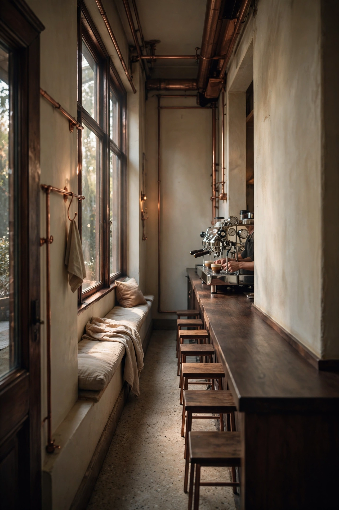
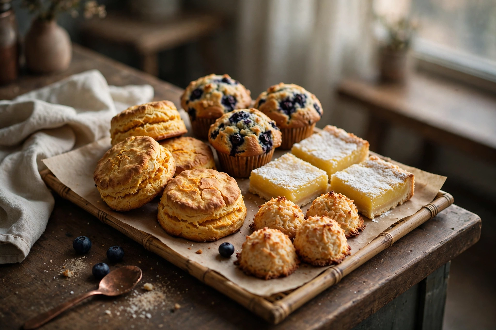
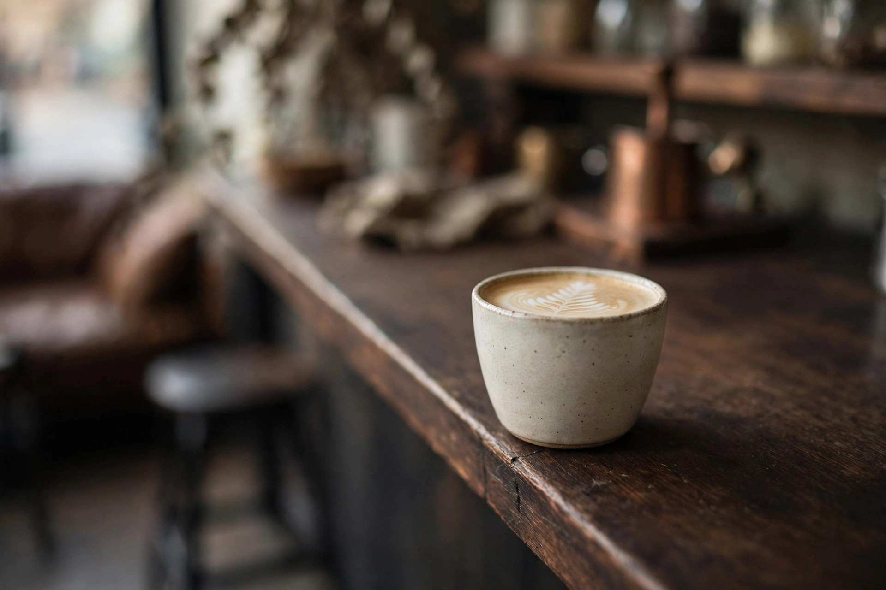
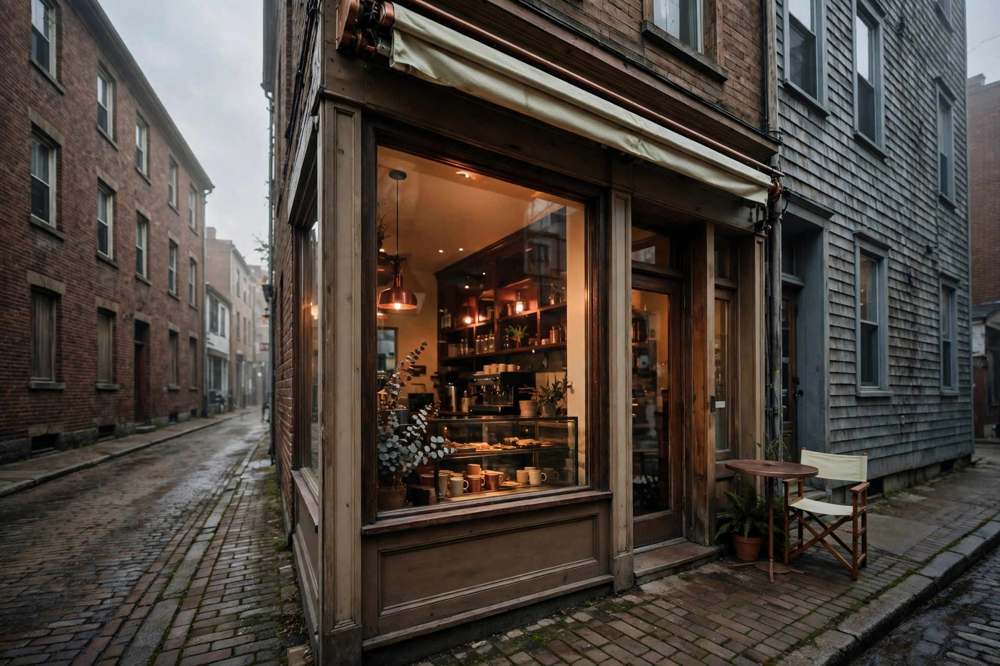

South End · Halifax, since 2013
Ten feet
wide.
All coffee.
A 10 × 30-foot espresso bar beside Darrell's on Fenwick Street. Six seats, one La Marzocco from Italy, and beans that are never, ever, more than ten days off the roast.

Ft. 01 · The Craft
Small room.
Strict rules.
AJ Son has run this bar since 2013. He trained with Lavazza in Italy in 2001, and the discipline shows less in what's on the menu than in what happens before your cup exists. These are the house's own rules, in its own words, kept daily:
-
R.1
Beans arrive weekly
North Mountain Fine Coffee, roasted in Berwick in the Annapolis Valley: direct and fair-trade beans from South America and Africa, delivered fresh to Fenwick Street every week.
-
R.2
Rested three days
Coffee is too sour when it's too fresh. Every delivery sits for three days before a single shot is pulled from it.
-
R.3
Gone by day ten
Any bean older than ten days is discarded. Not discounted, not blended down: discarded. It's the rule regulars can taste.
-
R.4
Cleaned every night
The La Marzocco, brought over directly from Italy, is thoroughly cleaned every evening, so the first shot of the morning tastes like the first shot.
The bases are made here too: tea, lemonade and drink bases built by AJ from organic loose-leaf tea, lemon, raw sugar and chocolate, with Ghirardelli chocolate and caramel, and VIVA vegan-certified syrups for anyone who wants them.

Ft. 03 · From Jane's
Baked at dawn,
gone by lunch.
The baked goods arrive every morning from Jane's, a local certified kitchen, all made from scratch: muffins, cookies, lemon bars, pecan bars, carrot cake, chocolate macaroons and almond macaroons.
The famous one is the sweet potato breakfast biscuit, with a whole free-range egg baked into it. Regulars plan around it. So should you.
Ft. 04 · Down the length of the room
Six seats of
morning light


Ft. 05 · The Room
A legend's
second act
Narrow Espresso opened in 2013, founded by barista AJ Son and the late Steve Armbruster, a pioneer of Nova Scotia's coffee scene, whose name still carries weight in every café in this city. The room they chose could hardly be smaller: ten feet wide, thirty long, tucked beside Darrell's restaurant on Fenwick Street.
There are six seats inside, a bench along the window for watching the street wake up, and one small table outside. Most of the South End takes theirs to go, on the way to the Sobeys next door, the hospitals, the universities. The rest squeeze in. Somehow, it always works.
"It really is the narrowest little shop I've ever been in."
a guest, via Google reviews
"Best iced lattes in Halifax."
a guest, via Google reviews
"The flat white was easily one of the best I've had."
a visitor from Ontario, via Google reviews
Ft. 06 · Visit
Find the
narrow door
Where
5570 Fenwick Street
Halifax, NS B3H 1P8
South End, beside Darrell's. Look for the smallest storefront on the street.
Hours
per Google listing
| Monday to Friday | 6:30 AM to 2:30 PM |
| Saturday | 8:00 AM to 3:00 PM |
| Sunday | 8:00 AM to 3:00 PM |
A heads-up: a couple of directories list the weekday close at 3:00 PM instead. The bar is small and mornings are the main event, so when in doubt, call ahead.
Reach the bar
Six seats and a window bench: most folks take it to go, and the coffee travels well.